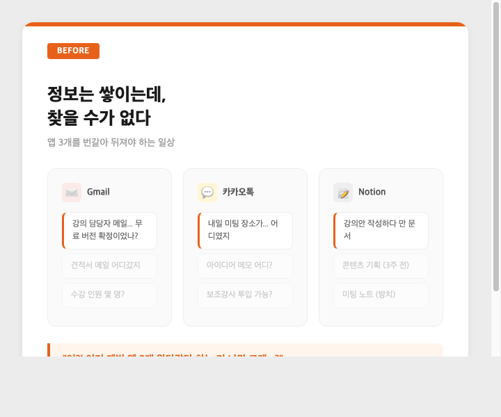
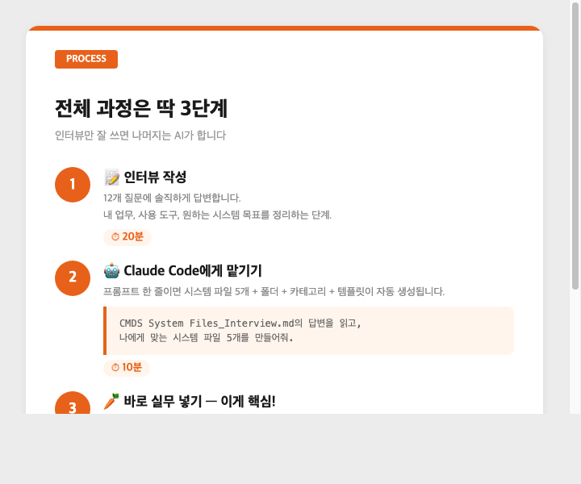
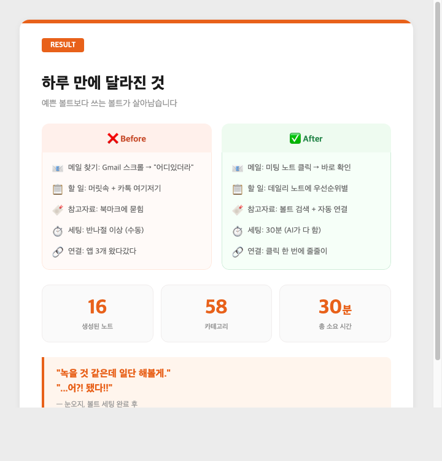

저는 인스타툰을 그리고, AI 강의를 하고, 사장님들을 위한 업무 자동화 대시보드를 만듭니다. 하는 일이 많다 보니 메모 관리가 엉망이었습니다.
강의 담당자분과 주고받은 메일은 Gmail에 묻혀 있고, 미팅 내용은 카톡 어딘가에 떠돌고, 콘텐츠 아이디어는 노션에 적다가 만 채 방치되어 있었습니다. 뭔가 찾으려면 앱 3개를 번갈아 뒤져야 했습니다.
정보는 쌓이는데, 찾을 수가 없는 상태.

그러던 중 GPTers 21기 옵시디언 스터디에 참여하게 되었습니다. 스터디장이신 구요한님이 설계한 CMDS(커맨드스페이스)라는 개인지식관리 프레임워크를 배우고, 이를 기반으로 나만의 옵시디언 볼트를 세팅하는 과정이었습니다.
옵시디언은 마크다운(.md) 기반의 노트 앱입니다. 노션이나 에버노트와 다른 점은 노트끼리 서로 연결(링크)된다는 것입니다.
예를 들어, "강의 담당자" 노트를 만들고 그 안에 [[SK 교육 미팅]]이라고 적으면, 두 노트가 자동으로 연결됩니다. 나중에 "강의 담당자"를 클릭하면 이 사람과 관련된 미팅, 메일, 프로젝트가 줄줄이 나옵니다.
그리고 마크다운 파일은 AI가 읽기 가장 좋은 형식입니다. 내 노트를 AI가 읽고 활용할 수 있는 구조로 쌓는 것. 이것이 옵시디언을 쓰는 가장 큰 이유였습니다.
하지만 저는 이 세 가지를 Claude Code로 해결했습니다.
Claude Code는 Anthropic이 만든 AI 코딩 도구입니다. 일반 ChatGPT와 가장 큰 차이는 내 컴퓨터의 파일을 직접 읽고, 만들고, 수정할 수 있다는 점입니다.
ChatGPT에게 "폴더 만들어줘"라고 하면 코드만 보여주고 끝나지만, Claude Code에게 말하면 진짜로 내 컴퓨터에 폴더가 생깁니다.

CMDS 프레임워크에는 인터뷰 파일이 포함되어 있습니다. 12개 질문에 답하면 AI가 분석해서 나에게 맞는 시스템을 설계해줍니다.
이 20분이 이후 모든 과정의 품질을 결정했습니다. AI가 인터뷰 답변을 분석해서 커스터마이징 포인트를 스스로 도출하기 때문입니다.
CMDS System Files_Interview.md의 답변을 읽고,
CMDS System Files_v3/ 폴더의 템플릿을 참고하여
나에게 맞는 CMDS 시스템 파일 5개를 볼트 최상위에 만들어줘.왜 5개로 나누는가? 하나에 다 담으면 AI가 매번 전체를 읽어야 해서 비효율적입니다.
| 파일 | 누가 읽나 | 한마디로 |
|---|---|---|
| CMDS.md | 모든 AI | "나는 이런 사람이고, 이렇게 일한다" |
| CLAUDE.md | Claude Code | "코드 작업할 때 이 규칙 따라" |
| AGENTS.md | GPT, Gemini 등 | "내 맥락 요약본" |
| 🏛 Guide.md | 나 + AI | "노트 쓸 때 이 형식으로" |
| 🏛 Head Quarter.md | 나 | "전체 카테고리 지도" |
시스템 파일 5개를 읽고, 볼트를 세팅해줘.
폴더 구조, 카테고리 노트, 인덱스 노트, 템플릿을 만들어줘.| 항목 | 수량 |
|---|---|
| 폴더 (00~90) | 10개 + 하위 폴더 |
| 카테고리 노트 | 58개 |
| 노트 템플릿 | 6개 (데일리, 회의록, 인물 등) |
인터뷰 20분 + 세팅 10분 = 총 30분. 손으로 했다면 반나절은 걸렸을 작업이었습니다.
세팅만 하면 "노트 앱 무덤"이 됩니다. 그래서 만든 직후 바로 실제 업무를 넣어봤습니다.
내일 할 일 → 데일리 노트
강의 관련 메일 → 미팅 노트
담당자분과 주고받은 메일의 핵심 결정사항만 뽑아서 미팅 노트에 넣었습니다. 강의 준비할 때 메일함을 뒤질 필요가 없어졌습니다.
스터디 레퍼런스 → 볼트에 수집
같은 스터디 수강생들의 사례글 8개를 요약해서 볼트에 저장했습니다. 작성자와 카테고리 링크로 연결해뒀더니, 검색 한 번에 전부 나옵니다.

| Before | After | |
|---|---|---|
| 메일 찾기 | Gmail 검색 → "어디있더라" | 미팅 노트 클릭 → 바로 확인 |
| 할 일 관리 | 머릿속 + 카톡 여기저기 | 데일리 노트에 우선순위별 |
| 레퍼런스 | 북마크에 묻힘 | 볼트에서 검색 + 자동 연결 |
| 세팅 소요 | 반나절 이상 (수동) | 30분 (AI) |
같은 스터디 수강생 8명의 사례글을 분석하면서 공통점을 발견했습니다.
잘 쓰는 사람들은 "완벽한 볼트"를 만든 게 아니라 "자기 상황을 먼저 파악"한 사람이었습니다.
한 분은 카테고리를 66개 만들었다가 25개로 줄였습니다. 또 다른 분은 자기 파일 53,000개를 AI로 먼저 분석한 뒤 체계를 잡았습니다. 노트 테이킹 자체를 싫어하는 분은 AI가 대신 노트하게 만들었습니다.
결국 "어떤 시스템이냐"보다 "내 일에 바로 쓸 수 있느냐"가 중요했습니다.
옵시디언이 어렵게 느껴지신다면, 세팅은 AI에게 맡기세요. 그리고 세팅 끝나자마자 내일 할 일부터 넣어보세요. 예쁜 볼트보다 쓰는 볼트가 살아남습니다.